Гильдии
В Империи существует ряд игровых сообществ или, другими словами, гильдий.
Гильдии призваны помогать игрокам решать различные игровые задачи,
увеличивая эффективность действий персонажей.
Гильдия
охотников
Гильдия
рабочих
Гильдия
наемников
Гильдия
воров
Гильдия
рейнджеров
Гильдия
тактиков
Гильдия
картежников
Гильдия
кузнецов
Гильдия
оружейников
Гильдия
стражей
Гильдия
искателей (Кампании)
Гильдия лидеров
Гильдия охотников
Гильдия предназначена для защиты земель Империи от атак нейтральных
существ. По данным разведки, их можно встретить у объектов недвижимости
на общей карте континента. Помимо улучшения боевых характеристик,
встреча с нейтральными войсками может принести вам дополнительный доход
в виде захваченного золота и артефактов. Встреча с нейтралами возможна
не чаще одного раза в 40 минут. Однако, в ночное время суток, примерно
с полуночи до 8 утра, враги активизируют свои действия и выходят на
тропу войны в 2 раза чаще, чем днем.
Получив 2-й уровень в гильдии охотников, герой может позвать на выручку
своих друзей в игре L, L-1 и L-2 боевого уровня, где L - боевой уровень
зовущего. Помощник должен находиться в том же секторе, а уровень
гильдии охотников должен быть не менее 1. В случае победы помощник
получит половину обещанной награды, до 0.5 умений, 0.1 навыка охотника
и шанс обнаружить артефакт. Инициатор боя получит навык охотника
пропорционально нанесенному урону.
При наборе необходимого количества очков охотника, гильдия обучит вас
тактикам боя, что повысит вашу силу атаки на единицу.
С ростом очков гильдии охотников, увеличивается численность армий
нейтралов, охраняемые ими богатства и ценность артефактов.
Вероятность выпадения вещи определяется уровнем охотника, т.е. чем выше
у него умение гильдии охотников, тем больше шансов получить артефакт.
Более того, на разных уровнях гильдии охотников могут выпадать разные
вещи. Найденные вещи обладают уникальными свойствами и их можно
использовать для составления комплектов амуниции.
Нападения на нейтральные армии возможны
только при соблюдении общих условий боя:
1) Готовность Вашей армии должна быть 100%;
2) Ваш персонаж не должен находиться в заявке на бой;
3) Параметр 'защита' вашего персонажа не должен быть отрицателен;
4) Ваш персонаж должен быть сопровожден набранной в замке армией.
Охотникам следует иметь в виду, что количество использованной маны во
время охоты уменьшается в 4 раза по ее завершению.
Гильдия обладает рейтингом. Подробнее»
Гильдия рабочих
Работая на объектах промышленности, ваш персонаж получает очки
специального навыка, которые считаются в гильдии рабочих. Таким
образом, эффективность любой производственной недвижимости напрямую
зависит от профессионализма рабочих, а величина их зарплаты умножается
на специальный коэффициент. Навык работника отображается на главной
странице персонажа, а таблица навыков гильдии рабочих в соответствующем
разделе описания игры.
Любой Герой, отработавший более 10 часов на предприятиях Империи после
последнего победного боя, будет работать с каждым последующим часом на
20% менее эффективно, вплоть до 10% от общей эффективности. Рабочая
эффективность восстанавливается сразу же лишь в том случае, если игрок
одержит победу в любом бою, получив как минимум 0.5 очков умения
фракции, в остальных случаях счетчик штрафных устройств уменьшается
пропорционально полученным умениям.
Кроме увеличения зарплаты, с ростом числа отработанных часов, благодаря
физическим нагрузкам, укрепляется и тело героя. Так, с каждым вторым
уровнем в гильдии рабочих параметр защиты увеличивается на 1 пункт.
Гильдия наемников
Представительства этой гильдии можно найти в секторах Империи -
Peaceful Camp, East River, Fairy Trees и Fishing village. В поисках
заработка сюда часто заглядывают горячие головы со всей округи, а также
любители приключений и профессиональные наемники. Их основное занятие -
выполнение разнообразных заданий. Задание может быть дано любому
отважному герою, достигшему 5-го боевого уровня. Все поручения строго
ограничены по времени. Каждый наемник считает своим долгом вернуться в
гильдию и доложить о результатах. Только после этого задание считается
выполненным или проваленным. За успешное выполнение поручения гильдия
выдает награду золотом и редкими элементами. Героев, выполнившие
большое количество заданий, получают от гильдии дополнительные бонусы.
По мере продвижения по уровням гильдии, герои открывают новые возможные
награды:
| ГН 0 |
ГН 1 |
ГН 2 |
ГН 3 |
ГН 5 |
|
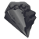 |
|
|
|
|
|
|
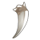 |
|
|
Каждый наемник имеет определенную репутацию в представительстве гильдии
- она влияет на частоту выдачи заданий. Успешное выполнение поручений
повышает лояльность к вам со стороны гильдии, а отказ от заданий или их
провал - ведет к снижению репутации. Следует отметить, что потерять
доверие гильдии гораздо проще, чем его заслужить.
Каждый пост гильдии наемников специализируется на определенных
заданиях. В Восточной Реке предпочитают уничтожать монстров, защищать
отряды, уничтожать армии. Аналогичные приоритеты и в Рыбачьем селе. В
Мирном лагере же предпочитают освобождать шахты, защищать от набегов,
уничтожать армии. В Магическом лесу – перевозить грузы, защищать
отряды, сражаться с заговорщиками.
Разнообразие заданий помогает героям развиваться весьма разносторонне,
благодаря чему с каждым вторым уровнем в гильдии наёмников они вольны
повышать один из основных параметров на свой выбор. Количество опыта,
необходимое для перехода на следующий уровень, можно узнать из таблицы
опыта.
Гильдия воров
Секретное общество, основной целью которого являются нападения на
торговые караваны. Вступить в гильдию можно лишь при наличии
специального приглашения другого вора или оплатив взнос в гильдии воров:
Стать вором могут только персонажи от 6 боевого
уровня. Свиток исчезает из инвентаря после применения, однако, при
получении 5-го уровня в гильдии, вору выдается новый.
Персонажам, получившим приглашение на 2ом
или 4ом уровне гильдии (до 15.10.2009, по другим правилам выдачи
приглашений), бумага на 5ом уровне гильдии воров не выдается.
Очки умения в гильдии начисляются за удачные нападения. Кроме того,
нападения на караваны и простых путешественников приносят вору золото.
Размер добычи пропорционален умению вора.
Наряду с нападениями на караваны, возможна встреча и с игроками, чей
боевой уровень равен боевому уровню вора.
Засады устраиваются на тропах между смежными секторами в обе стороны.
Нападение произойдет только в том случае, если кто-либо пройдет по
этому направлению. Однако у путника всегда есть шанс пройти
незамеченным мимо зазевавшегося грабителя.
1) Для успешной атаки готовность армии
вора должна быть 100%, армии атакуемого - не менее 40%;
2) Жертва вора, потерпевшая поражение, не может быть атакована повторно
в течение трех часов после битвы;
3) Вор, проигравший нападение, сможет устроить новую засаду спустя лишь
час;
4) Во время поединка восстановление здоровья и маны у жертвы не
останавливается, резерв скелетов у некромантов не уменьшается, а после
не сбрасывается;
5) Однажды покинувший ряды гильдии герой может в любое время вернуться,
заплатив штраф золотом в размере 1000*Боевой уровень.
За каждый новый уровень гильдии до 7-го включительно герой получает по
одному случайному артефакту из комплекта
вора. Начиная с 8-го уровня гильдии – по одному артефакту из комплекта
налётчика.
Помимо этого с каждым новым, без исключения, уровнем гильдии вор
улучшает свою прыть, увеличивая параметр инициативы на 1%. Однако эти
параметры не суммируются с инициативой от Гильдии Рейнджеров и
действуют лишь при активной Гильдии Воров.
Гильдия рейнджеров
Почётная организация, созданная для борьбы с бесчинствами Гильдии Воров
на торговых путях и маршрутах. Основная задача гильдии – своевременно
выявлять воровские засады и оперативно устранять обнаруженные угрозы,
дабы со временем раз и навсегда положить конец разбою и грабежу на
землях Империи.
Вступить в ряды бравых рейнджеров может любой желающий герой, достигший
7 боевого уровня, абсолютно бесплатно.
Для этого ему необходимо будет лишь посетить штаб гильдии
в Столице Империи и пройти небольшой боевой тест с
рейнджером-наставником, в ходе которого он расскажет об азах
рейнджерского мастерства. Двери гильдии открыты даже для раскаявшихся
воров, однако сами они при вступлении теряют все имеющиеся ранее в
воровской гильдии привилегии, в том числе и приобретённые очки
параметра инициативы.
Рейнджерский опыт приобретается при успешном выполнении заданий. Сами
задания выдаются в штабе гильдии и представляют собой призыв в
кратчайшие сроки помочь рейнджеру-разведчику в указанном районе в бою
против обнаруженного им вора. Однако перед принятием задания желательно
иметь в своём распоряжении быстроходный транспорт, так как воры весьма
прытки и способны довольно быстро уходить от преследования.
Непосредственно в бою рейнджер разведчик может как действовать
самостоятельно, так и выполнять указания героя, слушаясь следующих
команд:
жди (рейнджер-разведчик
будет ожидать своими войсками);
x:y (координаты
вражеского отряда, на котором следует сосредоточить атаку, где x -
координата по горизонтали, y - по вертикали. Например, 11:1);
атакуй (атаковать в
свободе действий, применимо после 1-й или 2-й команды).
Также существует вероятность разоблачить засаду вора-игрока, чей боевой
уровень равен боевому уровню рейнджера. Кроме того опыт рейнджера ещё
может приобретаться за успешные отражения воровских налётов при
попадании к ним в засаду. Однако при этом необходимо состоять в Гильдии
Рейнджеров, и она должна быть выбрана активной.
1) Для успешного начала поединка с вором,
которого обнаружил рейнджер-разведчик, готовность армии должна быть
100%;
2) Попасть в воровскую засаду при перемещении между районами можно лишь
при готовности армии не ниже 40%;
3) Вор, проигравший рейнджеру, не сможет устраивать засады в течение
часа.
Совершенствуя своё мастерство, рейнджеры получают навыки сноровки, повышая
параметр инициативы на 1% за каждый уровень гильдии. Эти параметры не
суммируются с инициативой, заработанной в Гильдии Воров, и действуют
лишь при активной Гильдии Рейнджеров.
Гильдия тактиков
Специальная гильдия для любителей боев с реальными соперниками. Однако,
в отличие от групповых боёв и дуэлей, бои в этой гильдии
регламентируются определенными правилами. Во-первых, гильдия доступна
только для персонажей от 9-го боевого уровня (со страницы «Битвы» или
через выпадающее меню).
Во-вторых, для вступления в гильдию необходимо доказать свою силу,
пройдя специальный тест на тактику: победив копию своей армии,
увеличенную в численности на 20%.
Бои в гильдии тактиков разделяются на
несколько видов:
1) Дуэльные бои между игроками одного уровня;
2) Разноуровневые парные бои формата 2 на 2;
3) Разноуровневые смешанные групповые бои.
Заявки на бои принимаются с 20 до 30 и с 50 до 00 минут каждого часа.
Герои, выбравшие дуэльный тип боя, не смогут встретиться более двух раз
в течение суток с одним и тем же соперником. За минуту до окончания
приема заявок герои, которым не нашлось пары в дуэлях, могут вступить в
заявку на парные и смешанные бои.
В первую очередь формируются парные бои с соперниками соответствующих
уровней, например, два героя [15] и [14] уровней против двух героев
[15] и [14] уровней. Затем оставшиеся участники распределяются в
смешанные бои. Игрок может выбрать героя из списка друзей для
совместного участия в бою, однако в таком случае пара всегда
распределяется только в смешанные групповые бои. Система не гарантирует
формирование боя для каждого участника.
За победу в бою игроки получают очки гильдии (от 1.0 до 1.5, в
зависимости от типа и состава участников боя) и, с некоторой
вероятностью, случайный артефакт существ.
Проигравшая сторона получает от 0.2 до 0.3 очков гильдии.
Отношение опыта к умению в гильдии тактиков значительно
выгоднее, чем в аналогичных групповых боях. Кроме того, с
каждым полученным уровнем гильдии, герою вручается один из 13
уникальных артефактов из комплекта
тактика. И наконец, уже с первого уровня гильдии тактика у
героя появится шанс поднять копию одного из артефактов противника
(артефакт будет поднят с низкой прочностью и без возможности передачи).
С каждым новым уровнем гильдии вероятность растет.
Гильдия картежников
Гильдия объединяет в себе всех почитателей карточной игры "Две башни".
Принять участие в игре может любой желающий, посетив таверну своего
сектора. Одержав победу, персонаж получает одно очко опыта, за проигрыш
опыт не дается. Получив первый уровень в гильдии, игрокам
предоставляется возможность совершать денежные ставки. Количество
опыта, необходимое для перехода на следующий уровень, а также
максимальный размер ставки для текущего уровня можно узнать из таблицы
опыта.
В тавернах разных секторов начальные условия и условия победы различны:
| |
Начальные
условия |
Условия победы |
| Сектор |
Башня |
Стена |
Шахта |
Монастырь |
Казармы |
Башня |
Ресурсы |
Empire
Capital
Eagle Nest
Harbour City |
20 |
5 |
2 |
2 |
2 |
50 |
150 |
East
River
Portal Ruins
Mithril Coast
The Wilderness |
20 |
10 |
3 |
3 |
3 |
75 |
200 |
Tiger
Lake
Dragons' Caves
Titans' Valley
Sublime Arbor |
20 |
10 |
5 |
5 |
5 |
150 |
400 |
Rogues'
Wood
Shining Spring
Great Wall |
20 |
50 |
1 |
1 |
5 |
100 |
300 |
Wolf
Dale
Sunny City
Fishing Village |
50 |
50 |
5 |
3 |
5 |
100 |
300 |
Peaceful
Camp
Magma Mines
Kingdom Castle |
20 |
10 |
3 |
1 |
2 |
125 |
350 |
Lizard
Lowland
Bear Mountain
Ungovernable Steppe |
20 |
10 |
1 |
1 |
1 |
200 |
500 |
Green
Wood
Fairy Trees
Crystal Garden |
30 |
15 |
4 |
4 |
4 |
100 |
300 |
В гильдии картежников существуют жесткие
правила:
1) 5% от суммы выигрыша забирает себе хозяин таверны;
2) Игрок с меньшим статусом не сможет играть в игру, где ставка выше
его максимальной;
3) Находиться в одном секторе с соперником не обязательно.
Оскорбления за карточным столом запрещены, за соблюдением порядка в
тавернах наблюдают хранители Империи и штрафуют особо буйных
посетителей.
Гильдия кузнецов
Для вступления в эту гильдию вам необходимо получить 6 уровень и
построить в своем замке кузницу. Войдя в нее и перейдя в раздел
"ремонт", вам откроется возможность ремонтировать сломанные артефакты.
Отремонтирован может быть
любой артефакт с прочностью 0/X. При этом общая
прочность предмета снижается на единицу, а эффективность ремонта
зависит от уровня гильдии и варьируется от 10% до 90%. Например,
эффективность начинающего кузнеца составляет 10% - это означает, что
артефакт с прочностью 0/30 после ремонта будет иметь прочность 3/29, а
после ремонта мастером с эффективностью 60% - 18/29.
 Цена ремонта артефактов из
магазина составляет 95% от их стоимости. Гильдия предупреждает, ремонт
– это искусство, почти всегда он невыгоден, исключение составляет
починка улучшенных или редких артефактов. Цена ремонта артефактов из
магазина составляет 95% от их стоимости. Гильдия предупреждает, ремонт
– это искусство, почти всегда он невыгоден, исключение составляет
починка улучшенных или редких артефактов.
Кузнецы боевых кланов, владеющих клановым складом, с 8-го уровня
гильдии могут получить доступ к ремонту сломанных артефактов со склада
за счёт золота на его балансе. Для ремонта артефактов из комплекта,
последний должен быть разгруппирован. Также кланом может быть
установлена автоматическая выплата премий таким кузнецам в размере от 0
до 10% от стоимости ремонта.
1) Время и стоимость ремонта не меняются с
ростом уровня в гильдии кузнецов. Увеличивается лишь эффективность
работы, а именно - остаточная прочность артефакта;
2) Время ремонта и получаемый за него опыт зависят только от оценочной
стоимости предмета и прямо пропорциональны ей. Таким образом, чем
дороже предмет - тем дольше он будет ремонтироваться и тем больше за
это дается очков гильдии;
3) Нельзя ремонтировать несколько предметов одновременно. Более того,
заниматься в кузнице можно только чем-то одним (кузница имеет несколько
разделов).
Количество опыта, необходимое для улучшения навыков кузнеца, можно
узнать из таблицы
опыта.
Гильдия
оружейников
Основанная учениками великого мастера, гильдия позволяет персонажам
создавать свои, уникальные элементы амуниции. Модернизация производится
на основе практически любого известного артефакта, который после
обработки приобретает новые магические свойства. В процессе создания
используются редкие элементы, добытые при помощи гильдии наемников или
купленные на рынке.
Модернизировать артефакты можно в кузнице, раздел "улучшения". В
гильдии три подразделения, каждый член гильдии может быть мастером
оружия, мастером доспехов и/или ювелиром. Мощность устанавливаемого
улучшения зависит от уровня соответствующего подразделения. Любое
улучшение требует время и элементы.
Опыт, получаемый от установки улучшения, равен количеству затраченных
элементов, эти очки идут как в подразделение, так и в общий опыт
гильдии. Каждый ученик сам решает, быть ему искусным мастером в одной
области, либо уметь все, но понемногу.
|
|
|
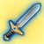
|
|
|
|
Вид
модернизации
|
Код
|
Элементы
|
Вид
модернизации
|
Код
|
Элементы
|
Вид
модернизации
|
Код
|
Элементы
|
|
Дополнительный
урон стихией земли
|
E
|
|
Защита от
магии земли
|
E
|
|
Увеличение
урона магией земли;
игнорирование защиты от воздуха
|
E
|
|
|
Дополнительный
урон стихией воздуха
|
A
|
|
Защита от
магии воздуха
|
A
|
|
Увеличение
урона магией воздуха;
игнорирование защиты от земли
|
A
|
|
|
Дополнительный
урон стихией огня
|
F
|
|
Защита от
магии огня
|
F
|
|
Увеличение
урона магией огня;
игнорирование защиты от воды
|
F
|
|
|
Дополнительный
урон стихией воды
|
W
|
|
Защита от
магии воды
|
W
|
|
Увеличение
урона магией воды;
игнорирование защиты от огня
|
W
|
|
|
Игнорирование
защиты цели
|
I
|
|
Снижение
атаки нападающего отряда
|
D
|
|
Увеличение
эффективности магии природы
|
N
|
|
|
Возможность
поставить 5-ое улучшение
|
-
|
|
Возможность
поставить 5-ое улучшение
|
-
|
|
Возможность
поставить 5-ое улучшение
|
-
|
|
На любой артефакт может быть
установлено до 5 различных типов улучшений. Количество зависит от
общего уровня оружейника. В рекламных целях своих услуг, вместе с
улучшением, мастер может поставить свое клеймо (за отдельную плату).
После модификации, к названию артефакта добавляется специальная
маркировка, а на его изображении в правом нижнем углу появляется
небольшой значок.
В бою эффект от модификатора можно увидеть нажав на герое "Ctrl+двойной
клик".
Для вступления в гильдию необходимо
построить в замке кузницу. Это здание доступно игрокам с 6-го уровня.
Некоторые разъяснения и комментарии по гильдии вынесены в отдельный
топ. Подробнее»
Количество опыта, необходимое для улучшения навыков оружейника, можно
узнать из таблицы
опыта.
Гильдия стражей
Старинные предания рассказывают о таинственной гильдии стражей,
издревле защищавшей земли Империи от ее многочисленных врагов. Незримым
щитом стражи оберегали Империю, сражаясь с захватчиками, искореняя
бунтарей, храня древние реликвии и магические источники. Порой
казалось, что спасительная длань стражей пропадала, и тогда жителям
Империи приходилось с оружием в руках отстаивать родные земли, но затем
все возвращалось на круги своя.
Многие герои безуспешно пытались найти местоположение гильдии и самих
стражей, но защитники ждали предреченного часа. Они знали, что наступит
время, когда Империя окажется под натиском невиданных доселе врагов. И
тогда им придется попросить о помощи достойнейших из героев, готовых
вступить в ряды стражей.
1) Вступить в новую гильдию может любой игрок от 3-го боевого уровня;
2) Для вступления необходимо выполнить тестовое задание, предлагаемое
главой гильдии;
3) Вход в Гильдию стражей доступен по ссылке,
а также в правом верхнем углу карты.
| 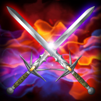 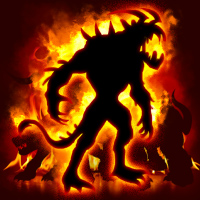
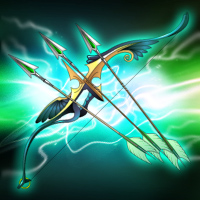 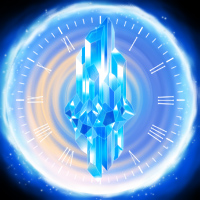 |
| 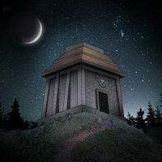
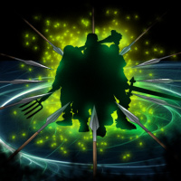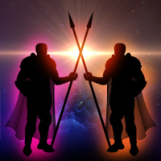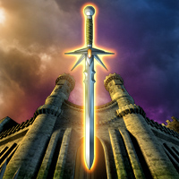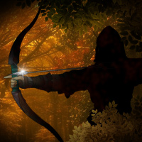 |
1) Каждый день доступно три задания Гильдии стражей. Смена заданий
происходит в полночь;
2) За первое успешное выполнение вы будете награждены золотом, в
зависимости от вашего боевого уровня;
3) Победный бой оценивается в звездах (от 1 до 3), в зависимости от
понесенных в битве потерь. Чем лучше выполнено задание, тем больше
очков гильдии, опыта и умений вы получите. За победу на "три звезды"
выдается артефакт существ;
4) Задания, оцененные в одну или две звезды, можно переиграть, улучшив
свой результат и получив недостающие очки гильдии, опыта и умения;
5) Если результат задания не улучшен или задание провалено, опыт и
умения начислены не будут (кроме первой попытки);
6) Начатое задание нельзя продолжить другой фракцией или классом;
7) Задания должны выполняться только в артефактах из магазина.
Модификаторы не действуют;
8) Для каждого боевого уровня установлены свои минимальные и
рекомендуемые очки амуниции;
9) Сложность заданий растет с уровнем гильдии;
10) Все задания гильдии заведомо проходимы (уже выигрывались на данном
уровне, данной фракцией и классом);
11) Действие Зелья
фракции распространяется на бои Гильдии Стражей (по среднему
умению на уровне).
Гильдия искателей (Кампании)
Любителей странствий и приключений объединила в себе гильдия искателей,
очки которой можно получить за прохождение кампаний.
Кампании представляют собой сюжетные миссии на уникальных мини-картах,
в ходе которых вы можете участвовать в боях, собирать предметы и вести
диалоги. В отличие от квестовых боев, в кампаниях армия и параметры
героя всегда соответствуют вашим, что делает возможным прохождение
кампании разными фракциями.
1) Существует три сложности для прохождения кампаний: "Новичок", "Воин" и "Герой". Сложность "Герой"
становится доступной после однократного прохождения данной кампании на
сложности "Новичок" или "Воин" за любую фракцию и класс;
2) За первое прохождение кампании на каждой из сложностей (а также для
каждой фракции и класса) на данном боевом уровне вы получаете награду,
тем большую, чем выше сложность. Награда может включать в себя
бриллианты, сертификат на постройку собственного дома (нужно собрать
100), золото, ресурсы, артефакты и артефакты существ.
3) Проходить кампании можно в любых артефактах, однако в боях не
работают модификаторы и напиток таверны;
4) Опыт и умения начисляются только при первом прохождении кампании на
данном боевом уровне данными фракцией и классом на этом уровне
сложности. За поражения в одном и том же бою (кроме первого) опыт и
умения не начисляются;
5) Кампанию можно проходить разными фракцией и классом, при этом бои за
новую фракцию и класс будут другими. Все бои проходимы;
6) По аналогии с Гильдией Стражей, бои в кампании оцениваются согласно
оставшейся на поле боя армии. Самый высокий итоговый результат (100%
эффективности) можно получить лишь пройдя все бои данной кампании;
7) После трех поражений сложность боя будет уменьшена, но за выигрыш
такого боя будет дана минимальная оценка;
8) Для каждого уровня существует рейтинг игроков по эффективности
прохождения, учитывающий все прохождения кампаний за различные фракции
и классы;
9) Действие Зелья фракции распространяется на бои кампании (по среднему
умению на уровне).
Очки гильдии - эта сумма лучших очков рейтинга
прохождений каждой кампании для каждой фракции и класса, независимо
от уровня и сложности. Таким образом, проходя кампанию
повторно за ту же фракцию и класс на новом уровне, вы получите
дополнительные очки только если улучшите результат
с учетом уровня сложности. Очки рейтинга за прохождение считаются по
следующей формуле:
- 0.8 * Эффективность
для сложности "Новичок"
- 1 * Эффективность
для сложности "Воин"
- 1.2 * Эффективность
для сложности "Герой"
Пример:
Пройдя на 15-ом уровне кампанию Поиск
целителя за эльфа на
среднем уровне сложности, вы набрали эффективность 90% и получили 100 *
0.9 = 90 очков Гильдии Искателей. Затем вы прошли ее за
эльфа-заклинателя на героической сложности, набрав эффективность 100% и
получив еще 1.0 * 120 = 120 очков гильдии. После этого вы перешли на
16-ый уровень. Вы можете пройти кампанию снова за эльфа-заклинателя,
заработав опыт, умения и награду, но не получите очков гильдии при
любом результате. Пройдя кампанию за обычного эльфа на Воине или Герое,
вы можете получить еще 10 (100 - 90) или 30 (120 - 90) очков гильдии
соответственно, проходить ее на Новичке ради рейтинга бесполезно.
Гильдия лидеров
Уютные стены Гильдии
Лидеров приглашают всех желающих от 5-го боевого уровня, дабы
предложить возможность с пользой для себя и Империи раскрыть весь свой
лидерский потенциал и привести собственных последователей к
непременному успеху.
Для того, чтобы выполнять задания Гильдии, Героям необходимо собрать
свою армию.
Не чаще чем раз в 5 результативных боёв (где
полученное умение больше 0.3 и были изношены артефакты) к Герою будет
присоединяться случайный отряд существ;
Количество существ в отряде последователей
зависит от того, были ли одержаны победы, какие были надеты артефакты и
от показателя лидерства самих существ.
Возможности Гильдии:
1) Каждый Герой может сформировать
армию из доступных ему отрядов последователей и отправлять её на
выполнение особых заданий;
2) Количество набираемых существ зависит от показателя лидерства Героя
и самих существ.
Лидерство Героя
зависит от уровня Гильдии;
Лидерство у подконтрольного
существа - параметр не постоянный и подвержен динамической
балансировке.
3) Суммарное лидерство одного набранного отряда
не может превышать 40% лидерства Героя;
4) Герою доступно не более трех заданий (не более 4-х с Благословением
Абу-Бекра). Количество заданий пополняется каждые три часа;
5) В любом задании будет три уровня сложности, чем сложнее противник,
тем больше золота и очков Гильдии может получить Герой;
6) Проиграв задание на одном из уровней сложности, есть возможность
попробовать пройти это задание на другом уровне сложности;
7) Новое задание будет доступно после победы на любом уровне сложности
или после проигрыша на всех уровнях сложности;
8) Бои проходят без артефактов, навыков и участия самого Героя. После
расстановки отрядов, при желании, можно активировать автоматический бой;
9) Герои не будут получать опыт и умения в данных боях, а артефакты не
будут изнашиваться;
10) Потерянная в бою армия исчезает из резерва, но после боя есть
возможность воскресить редких существ за золото. Стоимость воскрешения
зависит от лидерства существа. Скидка на воскрешение существ:
10% - для очень редких;
15% - для легендарных;
Важно! Если не воскресить существ перед следующим боем в рамках ГЛ, они
исчезнут.
11) Чем выше уровень Гильдии, тем выше вероятность присоединения к
Герою редких существ;
12) Есть возможность обменять
отряд на более редких не целиком, а только на 50,000 очков лидерства.
13) С развитием Гильдии Лидеров будут выдаваться новые типы заданий и
проводиться масштабные события.
|
|
|